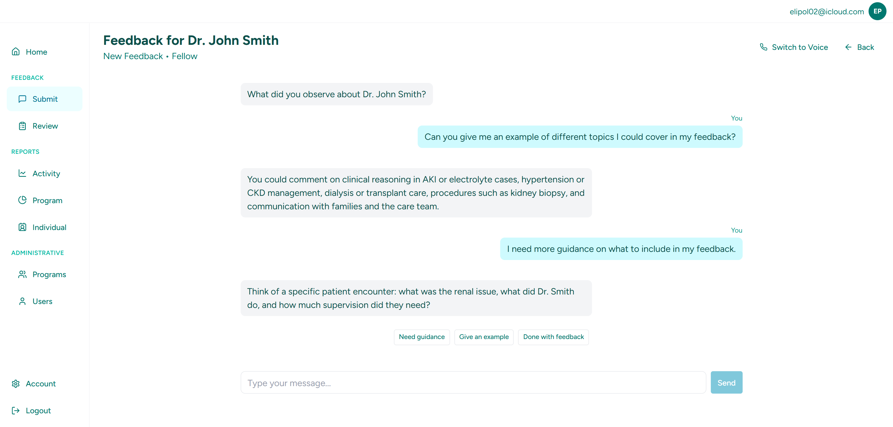

The Problem
Faults in industrial electrical systems often go unnoticed until something fails.
- Backend services that ingest breaker telemetry and process events in real time
- Event-driven alerting that flags anomalies and notifies operators
- Live dashboards for monitoring and diagnostics, from substation down to individual circuits
- Sensor data pipelines connected to backend APIs and persistent storage
PythonFastAPIPostgreSQLReactWebSocketsSensor Integration
Repository: Private
The Problem
Medical training programs evaluate trainees by hand, which is slow and inconsistent.
- Pipelines that turn text, voice, and document input into structured evaluation metrics
- APIs for multi-user workflows across training programs
- AI-guided feedback collection built into the evaluation workflow
- Backend services deployed and used in production
PythonFastAPILLM and Real-Time APIsPostgreSQL


Repository: Private
The Problem
Running several drones on one mission means tracking all their telemetry and commanding them from one place.
- Backend services that combine live telemetry from multiple drones
- Command routing and controls for coordinated flight
- Modular design so drones can join the network mid-mission
- MAVLink telemetry feeding live maps and monitoring dashboards
PythonC++MAVLinkWebSocketsReactPX4 AutopilotOnboard Computing
The Problem
Consumer sleep trackers rely on motion, not physiological signals, so their data is imprecise.
- Custom PCB designed in KiCAD with analog sensor circuitry
- Embedded firmware for signal acquisition and real-time processing
- Complete wearable system that records physiological data during sleep
Arduino / C++KiCADAnalog SensorsEmbedded FirmwarePCB Design